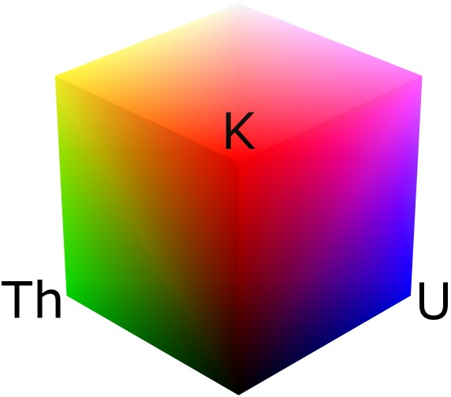

|  |
The K-Th-U (Potassium Thorium Uranium) ternary is an RGB image with dimensionless units. The NE gradient has been enhanced (dose) and the histogram equalised for area. Areas high in all three radioelements will appear white, while areas with little or no radioelements will appear black. High readings of Potasium(K) and Uranium(U) will appear as magenta. |